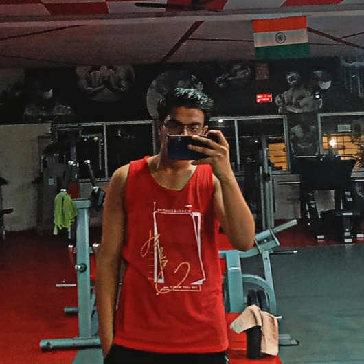

Hi, I'm Yash Inamdar
I’m Yash Inamdar, an enthusiastic and detail-oriented web developer currently pursuing a degree in Electronics and Telecommunication. My passion lies in transforming ideas into interactive and visually appealing websites using HTML, CSS, and JavaScript. With a strong foundation in both coding and design, I strive to create user experiences that are not just functional but memorable.